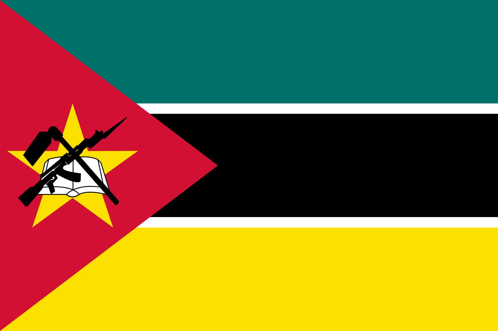

About Me
My name is Osvaldo Joao. I am from Beira, Mozambique and currently studying at the ELC BYU. I am passionate about technology, learning new skills, and I love spending time with friends and family. I also enjoy football, kayaking, and camping. I'm excited to grow in web development and build creative projects.
Beira, Mozambique
Beira is the second largest city in Mozambique, located in Sofala Province along the Indian Ocean. It is an important port city and gateway for trade in central Mozambique and neighboring countries. Beira is known for its rich culture, warm people, and beautiful coastal scenery.
